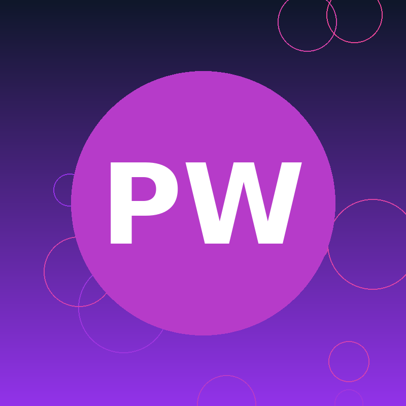

<div id="about">
    <div class="container">
        <div class="row">
            <div class="about-col-1">
                <div class="about-img-wrap">
                    
                    <div class="social-bar">
                        <a href="https://www.linkedin.com/in/param311997" target="_blank"><i class="fa-brands fa-linkedin-in"></i></a>
                        <a href="mailto:pwankhede700@gmail.com"><i class="fa-solid fa-envelope"></i></a>
                        <a href="tel:9689533634"><i class="fa-solid fa-phone"></i></a>
                    </div>
                </div>
            </div>
            <div class="about-col-2">
                <h1 class="sub-title">About Me</h1>
                <p>I'm Parmeshwar, a Java Full Stack Developer based in Pune, India, with 4.5+ years of experience designing, building, and maintaining scalable, production-grade web applications using Java, Spring Boot, and Angular.</p>
                <p>I have strong hands-on experience with REST API design, Microservices architecture, Spring Security/JWT authentication, and event-driven systems using Apache Kafka and RabbitMQ, backed by Elasticsearch for high-performance search. I'm currently expanding into cloud-native and DevOps practices — gaining hands-on experience with Docker, Kubernetes, AWS, and Jenkins for containerized deployments and CI/CD automation.</p>
            </div>
        </div>

        <div class="resume-section">
            <div class="resume-heading">
                <span class="eyebrow">Resume</span>
                <h2>Education <span>&</span> Experience</h2>
            </div>

            <div class="timeline">

                <div class="timeline-item">
                    <span class="marker"><i class="fa-solid fa-briefcase"></i></span>
                    <div class="timeline-card">
                        <div class="card-header">
                            <div>
                                <h3>Full Stack Developer</h3>
                                <div class="org"><i class="fa-solid fa-building"></i> Oracle</div>
                            </div>
                            <span class="duration-badge"><i class="fa-solid fa-calendar"></i> Aug 2025 - Present</span>
                        </div>
                        <h4 class="block-label">Highlights</h4>
                        <ul class="highlights">
                            <li><i class="fa-solid fa-circle-check"></i> Build and maintain scalable web applications using Java, Spring Boot, and Angular within an Agile/Scrum delivery team.</li>
                            <li><i class="fa-solid fa-circle-check"></i> Contributing to the migration of legacy applications from IBM WebSphere to a containerized platform, deploying to Oracle Kubernetes Engine (OKE) clusters using Docker, Kubernetes, and Jenkins-based CI/CD pipelines.</li>
                            <li><i class="fa-solid fa-circle-check"></i> Contribute to REST API design and secure endpoints using Spring Security and JWT-based authentication.</li>
                            <li><i class="fa-solid fa-circle-check"></i> Collaborate with cross-functional teams (QA, Product, DevOps) to plan and deliver features each sprint.</li>
                            <li><i class="fa-solid fa-circle-check"></i> Write unit tests and take part in code reviews to maintain code quality and long-term maintainability.</li>
                        </ul>
                    </div>
                </div>

                <div class="timeline-item">
                    <span class="marker"><i class="fa-solid fa-briefcase"></i></span>
                    <div class="timeline-card">
                        <div class="card-header">
                            <div>
                                <h3>Senior System Engineer</h3>
                                <div class="org"><i class="fa-solid fa-building"></i> Infosys Limited</div>
                            </div>
                            <span class="duration-badge"><i class="fa-solid fa-calendar"></i> Feb 2022 - Aug 2025</span>
                        </div>
                        <h4 class="block-label">Highlights</h4>
                        <ul class="highlights">
                            <li><i class="fa-solid fa-circle-check"></i> Built and enhanced web applications using Java, Spring Boot, Angular, JSONForms, SQL Server, RabbitMQ, and a Microservices architecture.</li>
                            <li><i class="fa-solid fa-circle-check"></i> Led the development team in the Team Lead's absence, ensuring uninterrupted sprint delivery and coordination.</li>
                            <li><i class="fa-solid fa-circle-check"></i> Worked closely with the Onsite Lead and Product Owner in an Agile/Scrum environment to gather, refine, and deliver requirements.</li>
                            <li><i class="fa-solid fa-circle-check"></i> Used Apache Kafka and RabbitMQ for event-driven communication between microservices, and tuned Elasticsearch for optimized search performance.</li>
                            <li><i class="fa-solid fa-circle-check"></i> Wrote unit tests using JUnit and Jasmine, managed SQL Server performance tuning, and deployed builds to Azure staging via automated CI/CD pipelines.</li>
                            <li><i class="fa-solid fa-circle-check"></i> Wrote and optimized SQL queries and worked with JSON data structures for efficient data exchange between services.</li>
                            <li><i class="fa-solid fa-circle-check"></i> Participated in code reviews, contributing to improved code quality and consistency across the team.</li>
                            <li><i class="fa-solid fa-circle-check"></i> Used Git for version control and day-to-day collaboration across the development team.</li>
                        </ul>
                        <div class="highlight-box">
                            <div class="highlight-box-label"><i class="fa-solid fa-diagram-project"></i> Key Project</div>
                            <div class="highlight-box-title">Toolbox-Horizon <span>(Aerospace Client)</span></div>
                            <p>Tool management platform for an aerospace client, built with a Microservices architecture and event-driven communication.</p>
                            <p class="tech-line">Java, Spring Boot, Angular, JSONForms, SQL Server, RabbitMQ, Kafka, Elasticsearch</p>
                        </div>
                        <h4 class="block-label">Certifications</h4>
                        <div class="pill-row">
                            <span class="pill">Infosys Certified Full Stack Professional</span>
                            <span class="pill">Infosys Certified Spring Boot Developer</span>
                            <span class="pill">Infosys Certified Front End Web Developer</span>
                        </div>
                        <h4 class="block-label">Achievements</h4>
                        <div class="pill-row">
                            <span class="pill">Insta Award</span>
                            <span class="pill">Infosys Rise Award</span>
                        </div>
                    </div>
                </div>

                <div class="timeline-item">
                    <span class="marker"><i class="fa-solid fa-graduation-cap"></i></span>
                    <div class="timeline-card">
                        <div class="card-header">
                            <div>
                                <h3>B.E. (Electrical)</h3>
                                <div class="org"><i class="fa-solid fa-book-open"></i> P. R. Pote Patil COE&M, SGBAU, Amravati</div>
                            </div>
                            <span class="duration-badge"><i class="fa-solid fa-calendar"></i> 2019</span>
                        </div>
                        <ul class="highlights">
                            <li><i class="fa-solid fa-circle-check"></i> Electrical Engineering — CGPI 7.02.</li>
                        </ul>
                    </div>
                </div>

                <div class="timeline-item">
                    <span class="marker"><i class="fa-solid fa-graduation-cap"></i></span>
                    <div class="timeline-card">
                        <div class="card-header">
                            <div>
                                <h3>Diploma (Electrical)</h3>
                                <div class="org"><i class="fa-solid fa-book-open"></i> MSBTE, Govt. Polytechnic, Washim</div>
                            </div>
                            <span class="duration-badge"><i class="fa-solid fa-calendar"></i> 2016</span>
                        </div>
                        <ul class="highlights">
                            <li><i class="fa-solid fa-circle-check"></i> Electrical Engineering — 81.23%.</li>
                        </ul>
                    </div>
                </div>

            </div>
        </div>

        <div class="languages-section">
            <h4 class="block-label">Languages Known</h4>
            <div class="pill-row">
                <span class="pill">English</span>
                <span class="pill">Hindi</span>
                <span class="pill">Marathi</span>
            </div>
        </div>
    </div>

    <!-- <app-footer></app-footer> -->
</div>
